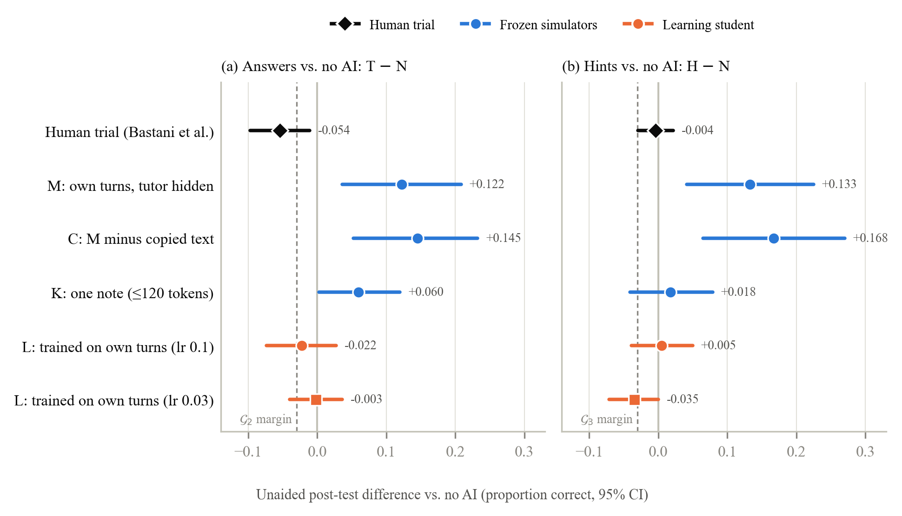

The Crutch Test: dialog explorer
In a field trial, students who used unrestricted GPT-4 scored 17% lower on a later exam taken without AI. AI tutors are now trained against simulated students, so those students should show the same loss. This page shows the pilot: one simulated student tutored three ways, then tested on a new variant of each problem without help.
Across all 50 problems

One problem at a time
Each score below comes from 8 or 16 sampled answers to one problem, so a single problem is noisy. The finding is the average over all 50 problems, shown above.
Tutored problem
Answer:
Test: a new variant, without help
Answer:
The three dialogs
Every dialog opens with the student asking for the answer. In the no-AI arm, a script replies "Keep going. Show your next step." A judge model flags dialogs in which the tutor hands over the solution.
What the student carries into the test
Scores on this problem
Each cell is the fraction of sampled answers that are correct. Select a cell to read one of its answers.